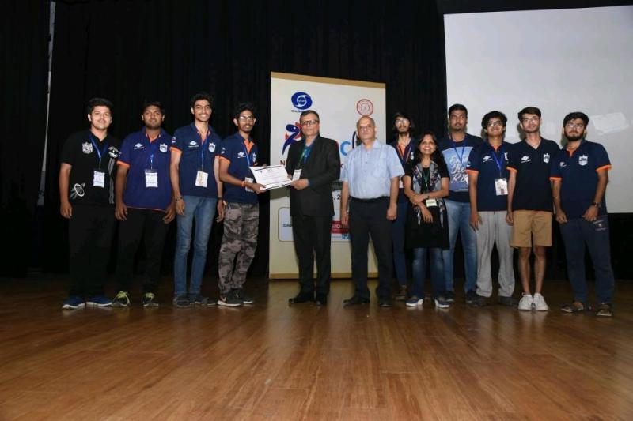
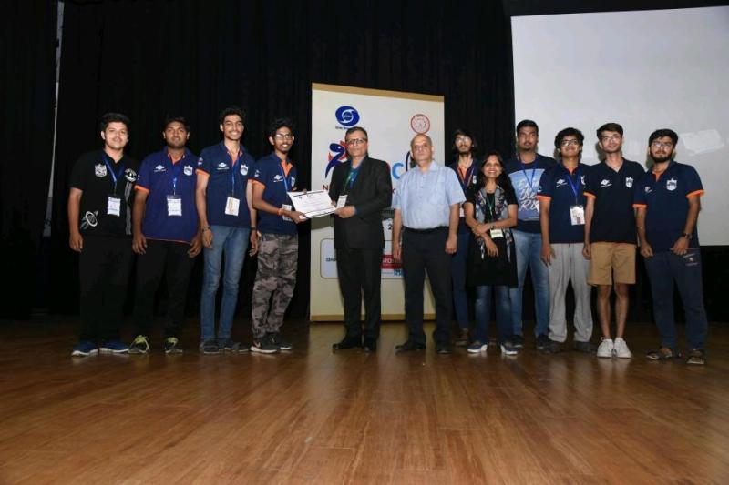
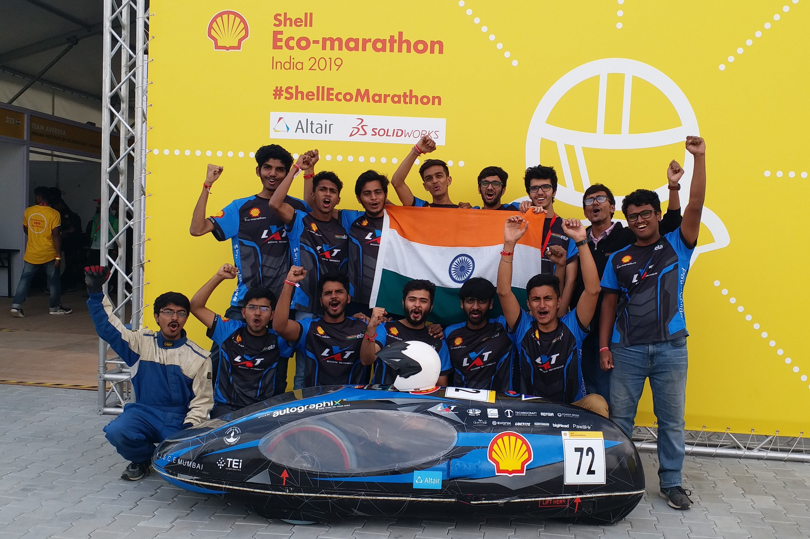
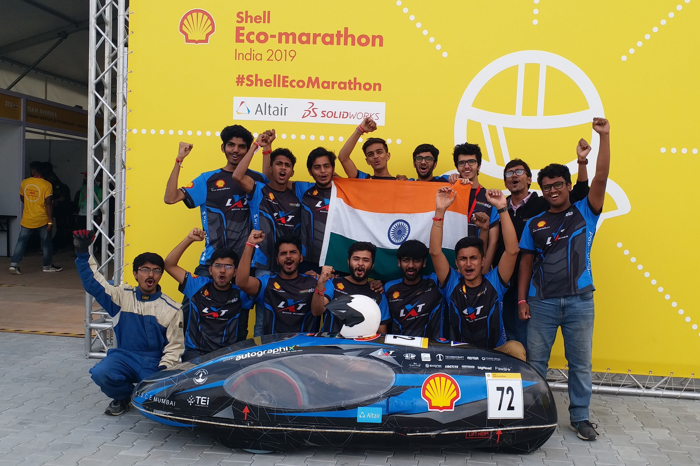

Hi, I'm Sahil Rajpurkar
Robotics Engineer | AI Enthusiast | Embedded Systems Developer
Building intelligent robotic systems that integrate software, hardware, and AI to solve real-world problems.
About Me
I'm a passionate robotics engineer with expertise in autonomous systems, computer vision, and embedded development. My work focuses on creating intelligent robotic solutions that bridge the gap between software and hardware.
I have extensive experience with ROS/ROS2, SLAM algorithms, and real-time perception systems. My technical skills span the entire robotics stack, from low-level embedded programming to AI-driven decision making.
Here are some technologies I've been working with recently:
Technical Skills
Robotics Frameworks
ROS/ROS2, Gazebo, MoveIt, Nav2, RTAB-Map
Programming
Python, C++, MATLAB, Bash
AI & Computer Vision
OpenCV, TensorFlow, SLAM, Object Detection
Embedded Systems
Arduino, Raspberry Pi, Sensor Integration
Navigation & Control
Path Planning, PID, Kalman Filters
Tools & Platforms
Git, Docker, Linux, AWS IoT
Professional Experience

Research Assistant – Robotics and Communication
Apr 2023 – PresentCommunication Networks Institute, TU Dortmund
Dortmund, Germany
Click to view details
- Autonomous Navigation: Designed systems using ROS2 and SLAM algorithms
- 3D Object Detection: Developed LiDAR-based system using NVIDIA Isaac Sim, ROS2, and Python
- Robotic Air Hockey: Created system with user-controlled arm and AI-trained autonomous arm
- Drone Interference Analysis: Collected spectrum data and trained ML models to detect signals (Bluetooth, FHSS, OFDM)
Research Assistant – Embedded and Testing
Jul 2020 – Sep 2022Biomedical Engineering and Technology Innovation Centre (BETiC), IIT Bombay
Mumbai, India
Click to view details
- Medical Devices: Led development of ventilators and oxygen generators, ensuring performance and ISO compliance
- Sensor Integration: Worked with UART, SPI, and I2C protocols and programmed STM32/ATMEL microcontrollers
- Real-time Algorithms: Developed diagnosis algorithms in Embedded C using RTOS with Git version control
- Testing: Conducted software- and device-level testing of medical devices in accordance with ISO 13485 standards
Featured Projects

Autonomous Mobile Robot
Warehouse automation system using LiDAR, ROS, and advanced path planning algorithms for efficient navigation.
- ROS
- SLAM
- Path Planning

Gesture-Controlled Robotic Arm
Arduino and IMU powered robotic arm controlled by human gestures with real-time response.
- Arduino
- IMU
- Embedded C

Vision-Based Navigation for MAVs
Developed computer vision system for micro aerial vehicles using OpenCV and ROS.
- OpenCV
- ROS
- Python
Education
Master's in Automation and Robotics
Oct 2022 – Feb 2025Technical University Dortmund
Dortmund, Germany
Click to view details
- Specialization: Robotics and Cognitive Systems
- CGPA: 2.3/4.0
- Thesis: "Development of Machine Learning-based Radar Object Detection for Logistics Entities"
- Key Courses: Mobile Robots, Machine Learning, Robotic Manipulators, Computer Vision
Bachelor's in Electronics and Telecommunication
Aug 2016– Jul 2020Mumbai University – K.J. Somaiya College of Engineering
Mumbai, India
Click to view details
- Major: Embedded Systems
- CGPA: 2.0/4.0
- Thesis: "Controlled Motion of a Pneumatic Quadruped Robot"
- Key Courses: Control Systems, Embedded Systems, Digital Signal Processing
Internships
Robotics Research Intern
Summer 2021ABC Robotics Lab
- Developed SLAM algorithms for indoor mobile robots
- Implemented sensor fusion techniques using ROS
- Optimized path planning algorithms for warehouse automation
Embedded Systems Intern
Winter 2020XYZ Technologies
- Designed firmware for robotic control systems
- Developed real-time communication protocols
- Implemented safety features for industrial robots
Publications
Gaits Stability Analysis for a Pneumatic Quadruped Robot Using Reinforcement Learning
International Journal of Industrial and Manufacturing Engineering, Vol. 15, No. 9, WASET, 2021
This paper presents a stability analysis of various gaits for a pneumatic quadruped robot, leveraging reinforcement learning techniques to enhance locomotion performance and adaptivity.
Competitions
 

RoboCon 2019
IIT Delhi • Aug 2019
- Led a 30-member interdisciplinary team (mechanical, software, hardware) for RoboCon and MATLAB competitions
- Developed and programmed 3-wheel and 4-wheel autonomous robots using laser mapping
- Implemented line-following and custom SLAM algorithms, improving navigation speed by 40%
- Competed against 100+ university teams at a national level
 

Shell Eco-marathon 2019
Shell Technology Centre, Bangalore • Nov 2019
- Refined a bicycle-based engine to achieve an exceptional fuel efficiency of 268.7 km/l
- Designed and integrated a thermal camera-based fire-redundant safety system with IoT support
- Delivered a technical presentation to a panel of industry experts
Awards & Honors
PUSH Scholarship
KJ Somaiya College of Engineering, Mumbai, India
Robocon 2019 – 5th Place
IIT Delhi, India
Shell Eco-Marathon 2019 – 1st Place
Bangalore, India
Volunteering
Technical Volunteer
ROBOCUP 2024
Eindhoven, Netherlands
- Assisted participants in using the vSTING module to simulate network degradation effects
- Helped configure latency and packet loss settings
- Supported troubleshooting during simulations
Students Volunteer
DEGIS-German Association for International Students
Bochum, Germany
- Organized events for international students, ensuring an inclusive and memorable experience
- Documented events through videos and photos
- Managed social media posts and engagement
Coding Instructor
Workshop - Introduction to Arduino
Mumbai, India
- Teach robotics fundamentals to underprivileged students
- Develop curriculum for beginner Arduino workshops
- Mentor teams for internal robotics competitions
Get In Touch
Contact Information
sahilrajpurkar1998@gmail.com
+49 176 71678983
Dortmund, Germany